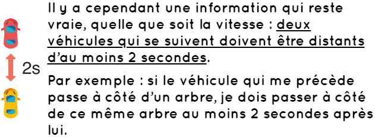

La distance qui doit séparer deux véhicules qui se suivent dépend de la vitesse à laquelle les véhicules roulent.
Quand le véhicule qui me précède passe à côté d’un élément remarquable,
tel qu’un arbre ou un panneau, je commence à dire la phrase : “Un éléphant, deux éléphants”.
Cette phrase est très pratique, car elle prend environ 2 secondes pour être dite (en prenant bien
soin de marquer la virgule).
Si j’ai atteint le repère avant d’avoir fini la phrase, je suis trop près du véhicule qui me précède.
Comme on vient de le voir, l’important est de laisser 2 secondes d’écart avec le véhicule qui nous précède. Il existe également un calcul simple qui permet de connaître approximativement la distance de sécurité à laisser en fonction de notre vitesse.
Le calcul est le suivant :
EXEMPLE:
Pour croiser ou dépasser un autre véhicule, il faut laisser une certaine distance de sécurité latérale. Il n’existe pas de distance minimale officielle pour cette distance de sécurité, mais elle doit être suffisante pour qu’il n’y ait pas de danger, même si le véhicule croisé ou dépassé fait un écart.
Pour dépasser un usager vulnérable (piéton, deux-roues, etc.), il y a une distance latérale de sécurité minimale à respecter :
Bon courage pour votre code !